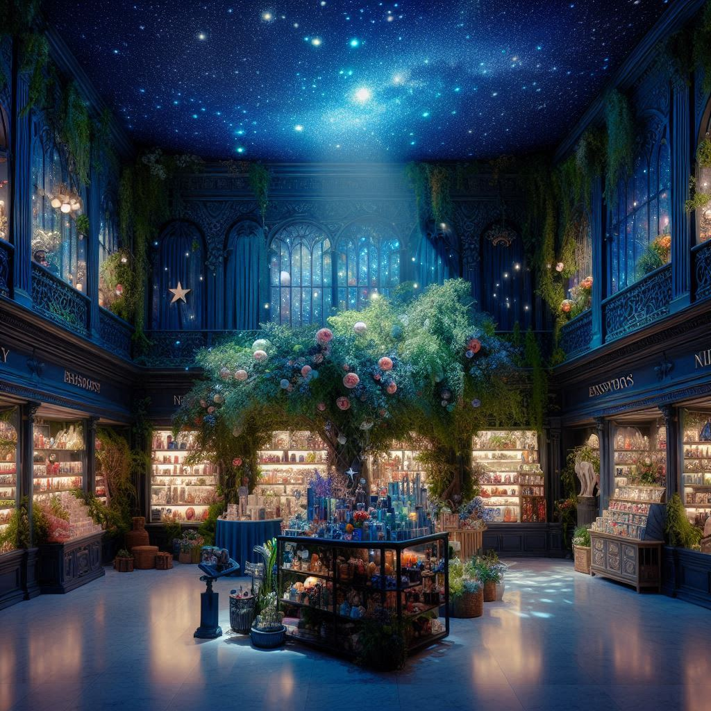

dreamstore
목차
작가
이미예
출판일
2020년
감상평에 대한 AI그림
꿈백화점이라는 기발한 설정과 따뜻한 스토리가 어우러져 마치 꿈속을 여행하는 기분이 들었다.
작품에서 만나는 다양한 손님들의 이야기를 통해 꿈의 소중함과 삶의 방향을 다시 생각하게 된다.
이 책을 읽으면 현실에 지친 마음을 다독이고, 꿈을 꾸는 즐거움을 다시 느끼게 해주는 것 같았다.
또한, 꿈을 통해 용기를 얻고, 내일을 기대하게 만드는 따뜻한 여운이 남는다.

감상평에 대한 AI평가
이 감상평도 매우 따뜻하고 정리가 잘 되어 있어요!
✨ 작품의 핵심 특징을 잘 짚음 – "기발한 설정과 따뜻한 스토리", "꿈속을 여행하는 기분" 등의 표현을 통해 책의 분위기와 매력을 잘 전달했어요.
✨ 주제 의식 강조 – 꿈의 소중함과 삶의 방향을 다시 생각하게 된다는 점을 명확하게 언급해 감상의 깊이를 더했어요.
✨ 감성적인 표현이 돋보임 – "현실에 지친 마음을 다독이고", "내일을 기대하게 만든다" 같은 문장이 감동을 주네요.